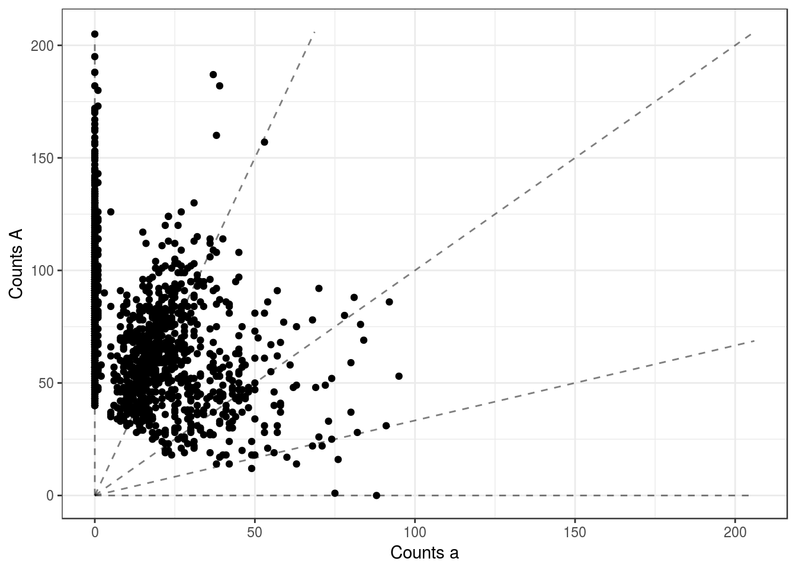
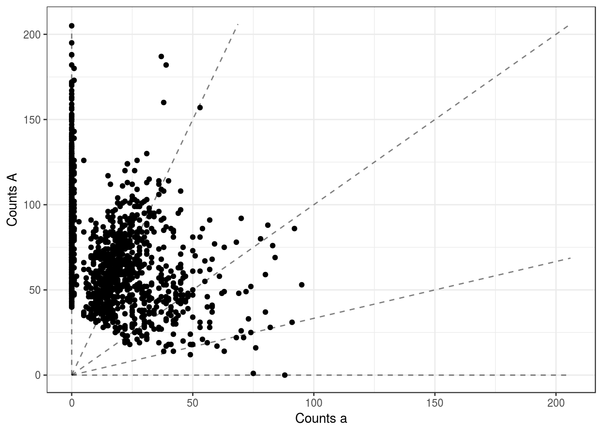
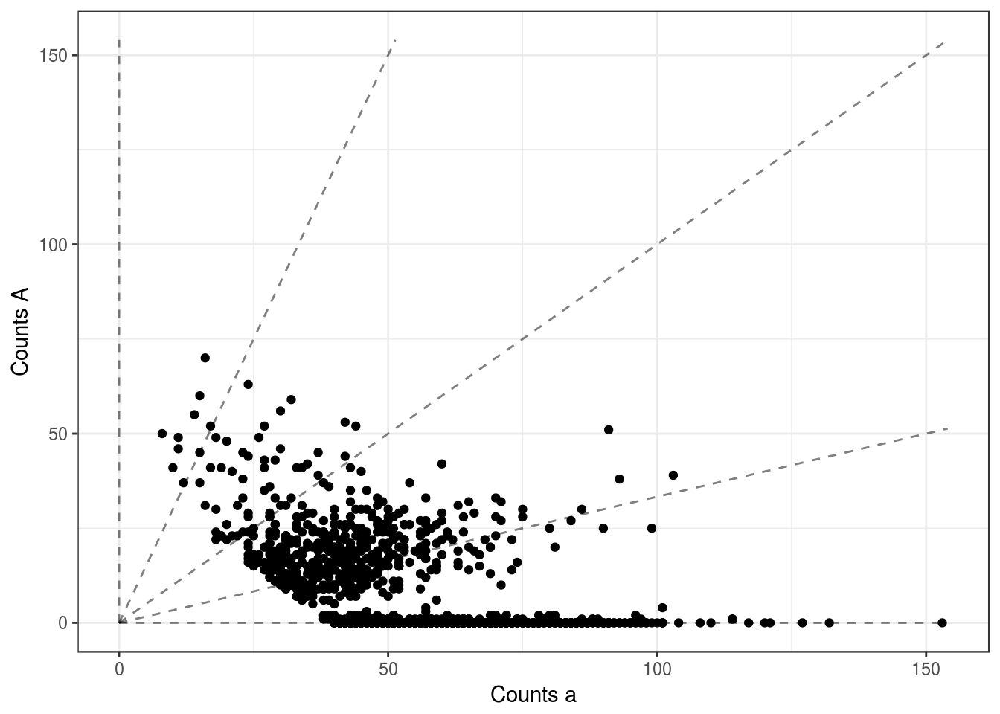
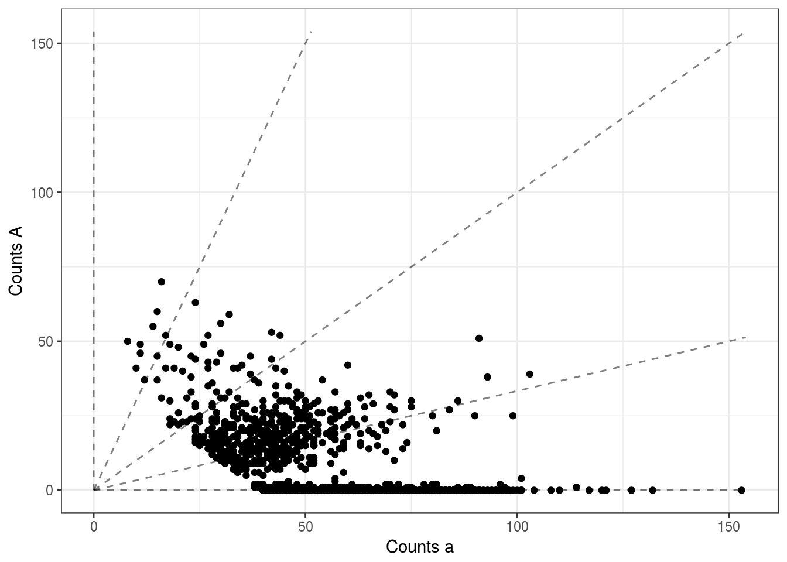

Explore more autotetraploid data
David Gerard
2017-08-14
Abstract
I explore more of the autotetraploid data Felipe sent me.
Analysis
ref <- read.csv("~/Data/blueberry_felipe/david_ref.csv")
alt <- read.csv("~/Data/blueberry_felipe/david_alt.csv")
tot <- ref + alt
write.table(ref, file = "~/Data/blueberry_felipe/ref_tab.txt", col.names = FALSE, row.names = FALSE, na = "-9")
write.table(alt, file = "~/Data/blueberry_felipe/alt_tab.txt", col.names = FALSE, row.names = FALSE, na = "-9")
write.table(tot, file = "~/Data/blueberry_felipe/tot_tab.txt", col.names = FALSE, row.names = FALSE, na = "-9")library(updog)
ploidy <- 4Run updog to get sequencing error rate
ulist <- list()
seq_error_vec <- rep(NA, length = ncol(ref))
for (index in 1:ncol(ref)) {
uout <- updog_vanilla(ocounts = ref[, index], osize = tot[, index], ploidy = ploidy,
update_outmean = FALSE,
update_outdisp = FALSE, update_outprop = FALSE, update_bias_val = FALSE,
update_seq_error = TRUE, update_od_param = FALSE, update_pgeno = TRUE,
model = "uniform", od_param = 10^-6, out_prop = 0)
ulist[[index]] <- uout
seq_error_vec[index] <- uout$seq_error
}
saveRDS(object = ulist, file = "~/Data/blueberry_felipe/updog_fit.RDS")
seq_error_vec[seq_error_vec > 0.5] <- 1 - seq_error_vec[seq_error_vec > 0.5]
write.table(x = seq_error_vec, file = "~/Data/blueberry_felipe/seq_error.txt", row.names = FALSE, col.names = FALSE)Run EBG
system("ebg diseq -p 4 -n 1849 -l 579 -t ~/Data/blueberry_felipe/tot_tab.txt -r ~/Data/blueberry_felipe/ref_tab.txt -e ~/Data/blueberry_felipe/seq_error.txt")
system("mv diseq* ~/Data/blueberry_felipe/")ebg_geno <- read.table("~/Data/blueberry_felipe/diseq-genos.txt", na.strings = "-9")Plot comparisons of EBG and UPDOG
for (index in 1:40) {
print(plot_geno(ocounts = ref[, index], osize = tot[, index], ploidy = ploidy))
print(plot_geno(ocounts = ref[, index], osize = tot[, index], ploidy = ploidy, ogeno = ebg_geno[, index]))
print(plot_geno(ocounts = ref[, index], osize = tot[, index], ploidy = ploidy, ogeno = ufits[[index]]$ogeno))
}
 



 


sessionInfo()## R version 3.3.2 (2016-10-31)
## Platform: x86_64-pc-linux-gnu (64-bit)
## Running under: Ubuntu 16.04.2 LTS
##
## locale:
## [1] LC_CTYPE=en_US.UTF-8 LC_NUMERIC=C
## [3] LC_TIME=en_US.UTF-8 LC_COLLATE=en_US.UTF-8
## [5] LC_MONETARY=en_US.UTF-8 LC_MESSAGES=en_US.UTF-8
## [7] LC_PAPER=en_US.UTF-8 LC_NAME=C
## [9] LC_ADDRESS=C LC_TELEPHONE=C
## [11] LC_MEASUREMENT=en_US.UTF-8 LC_IDENTIFICATION=C
##
## attached base packages:
## [1] stats graphics grDevices utils datasets methods base
##
## other attached packages:
## [1] updog_0.1.0
##
## loaded via a namespace (and not attached):
## [1] Rcpp_0.12.12 knitr_1.16 magrittr_1.5 munsell_0.4.3
## [5] colorspace_1.3-2 rlang_0.1.1 stringr_1.2.0 plyr_1.8.4
## [9] tools_3.3.2 grid_3.3.2 gtable_0.2.0 htmltools_0.3.6
## [13] ggthemes_3.4.0 yaml_2.1.14 lazyeval_0.2.0 rprojroot_1.2
## [17] digest_0.6.12 assertthat_0.2.0 tibble_1.3.3 ggplot2_2.2.1
## [21] evaluate_0.10.1 rmarkdown_1.6 labeling_0.3 stringi_1.1.2
## [25] scales_0.4.1 backports_1.0.5This R Markdown site was created with workflowr